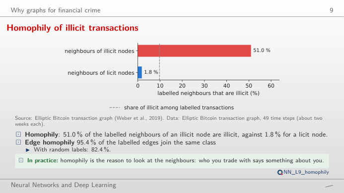
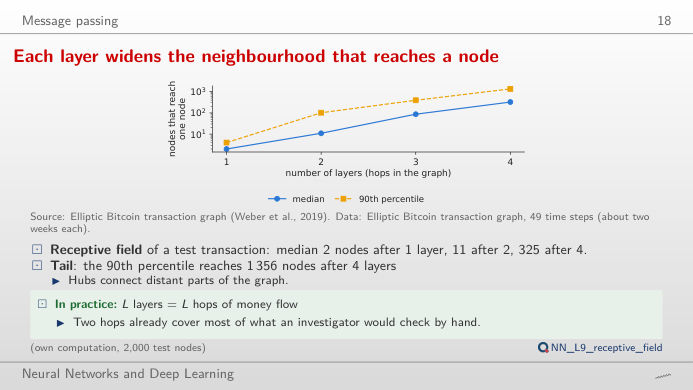
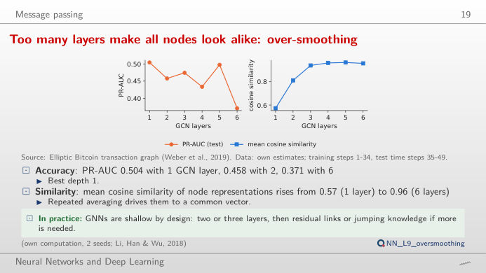
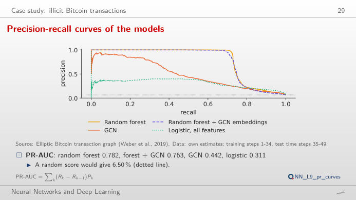
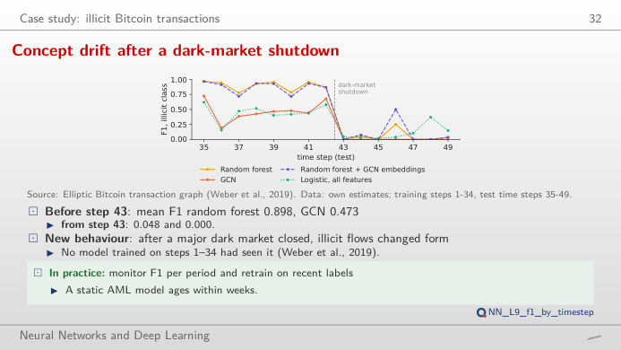
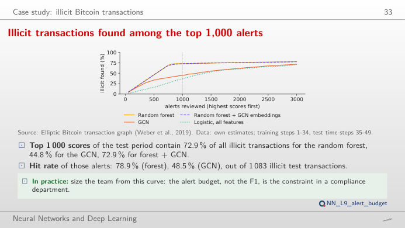

Graph neural networks (GNN) learn from the neighbours of each node. The slide of the lecture is on the left, the same figure on the right, recomputed in your browser from the Elliptic Bitcoin graph and from the scores of the lecture's models when you move a control: the graph convolutional network (GCN), graph sample and aggregate (GraphSAGE), the graph attention network (GAT), the multilayer perceptron (MLP), logistic regression and random forest, tested for anti-money laundering (AML). The ▶ button moves the main parameter step by step. Under each figure: a readout, a question for the room and the Quantlet with the code of the chart.
Why graphs for financial crime · Message passing · Case study: illicit Bitcoin transactions
Why graphs for financial crime
Homophily of illicit transactions

Answer
No. Move the time step: in step 29, the peak of the training period, the share is 86.2% (276 illicit transactions with labelled neighbours), while in step 9 it is 25.4% and in a few steps it is 0. Edge homophily over the whole graph is 95.4%, against 82.4% if the labels were assigned at random. Homophily is the signal a GNN exploits, and its strength varies over time: one more reason to test in time order.
Message passing
Each layer widens the neighbourhood that reaches a node

Answer
1,259 transactions (exact count in the full graph): 3 after one round, 27 after two, 283 after three and 3,081 after six. The lecture sample of 2,000 test transactions has a median of 2, 11, 87 and 325 nodes after 1–4 rounds. With the known labels as signal, the degree-weighted share of illicit labels at the centre falls from 1.00 (k = 0) to 0.68 (k = 4) and 0.56 (k = 6): the further the messages travel, the more the centre resembles the average of a large neighbourhood.
Too many layers make all nodes look alike: over-smoothing

Answer
Each layer averages a node with its neighbours, so the representations become alike. Averaged over 2 seeds, the trained GCN has a PR-AUC of 0.504 with one layer, 0.458 with two and 0.371 with six, while the mean cosine similarity of its representations rises from 0.57 to 0.96. The right panel repeats only the averaging, with no trained weights: the cosine similarity of the 165 propagated features rises from 0.29 (raw features) to 0.56 after 3 rounds and 0.69 after 10. Seed 1 and seed 2 differ, which is why the lecture reports means.
Case study: illicit Bitcoin transactions
Precision-recall curves: the ranking behind the F1

Answer
At threshold 0.5 the logistic regression on all features finds 77.1% of the illicit test transactions (recall) but only 22.0% of its alerts are illicit (precision); the random forest finds 72.5% with a precision of 92.7%. The curve shows the whole trade-off: with seed-averaged scores the area under it is 0.785 for the forest, 0.499 for the GCN, 0.596 for GraphSAGE and 0.311 for the logistic regression, against a base rate of 6.5%. Move the threshold to see that the forest stays above the others at almost every recall.
Concept drift after a dark-market shutdown

Answer
No. From step 43 the mean F1 of the forest is 0.048 at threshold 0.5 and 0.015 at threshold 0.2; the GCN goes from 0.473 to 0.000 at 0.5. Lowering the threshold adds false alarms but does not find the new kind of illicit flows, which no model trained on steps 1–34 had seen. Only the logistic regression keeps a little recall (mean F1 0.151 after step 43 at threshold 0.2), at the price of many false alerts. Drift is fixed by retraining on recent labels, not by moving a threshold.
What an investigation team gets from 1,000 alerts

Answer
With the random forest it finds 72.9% of them (789 of the 1,000 alerts are illicit, a hit rate of 78.9%); with the GCN 44.8% (hit rate 48.5%); with the logistic regression on all features 36.6%. Choose the forest and look at the right panel: almost all hits fall in steps 35–42, before the shutdown; the illicit transactions of steps 43–49 are barely found at any budget. The alert budget, not the F1, sizes a compliance team.
Data: Elliptic Bitcoin transaction graph (Weber et al., 2019): 203,769 transactions, 234,355 payment flows, 165 features, 49 time steps of about two weeks. Models trained on steps 1–34 and tested on steps 35–49 (16,670 labelled test transactions, 1,083 illicit); scores averaged over the seeds of each model (own estimates, lectures/L9/analysis_L9.py).